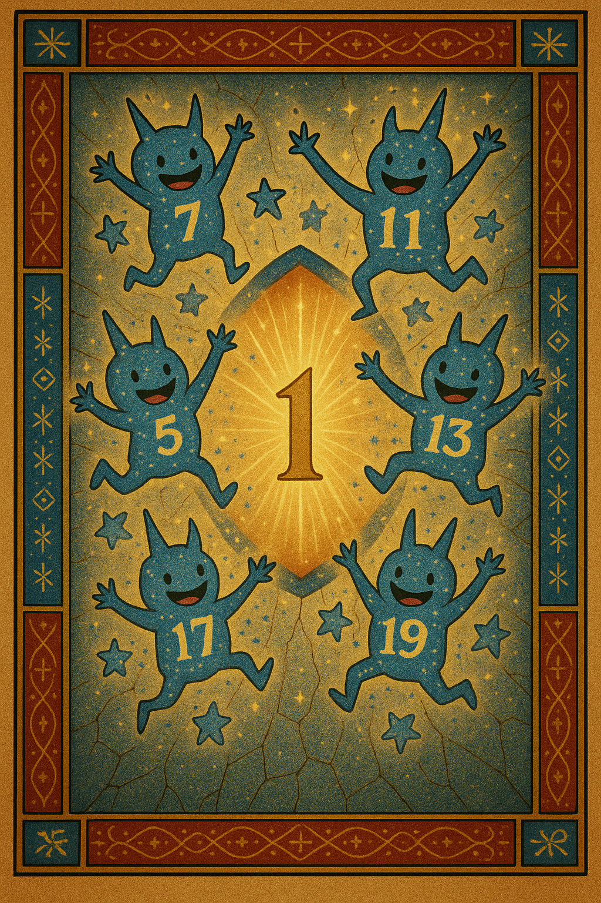

Welcome to Euclid's Prime Musical!
Our very first, super rough prototype!
Listen to our first song draft!
Play First Prime Song!

And our second song draft!
Play Second Prime Song!
Get ready for dancing primes!
Listen to our third song draft!
Play Third Prime Song!
Witness the Next Prime Reveal!
More to come soon! Get ready for dancing primes!